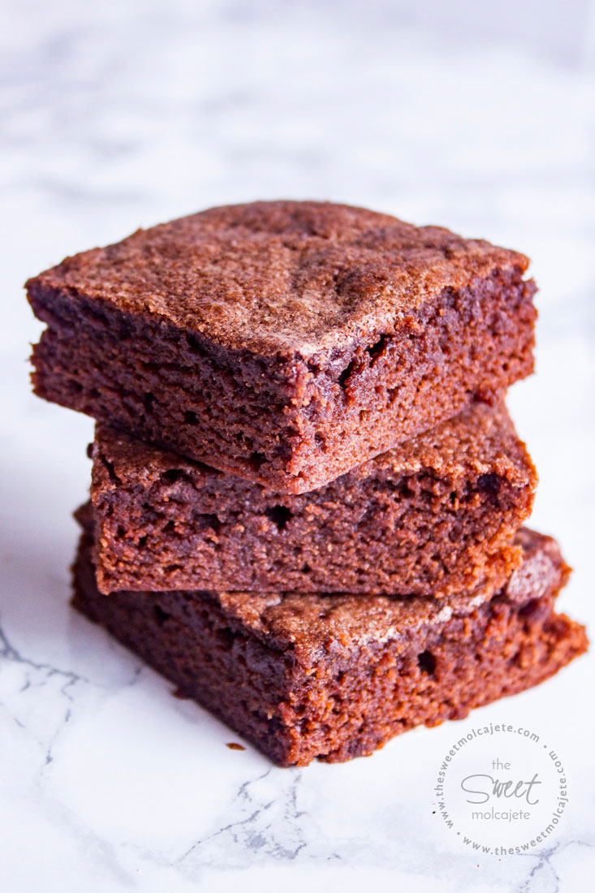
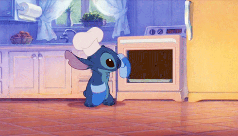

🎂Punchis cake´s🎂
¡Hola! hoy les traemos algunas recetas excelentes para esas meriendas inolvidables con amiguis
¡MANOS A LA MASA!
receta 1
*esto es especial para los amantes de lo chocolatoso*

¡¡BROWNIE!!
*ingredientes*
.100gr de manteca
.150gr de chocolate
.2 huevos
.1 taza de azúcar
.1/2 taza de nueces picadas
.100gr de harina
¿como hacemos el brownie de chocolate?
1-Para comenzar con nuestra receta de brownies de chocolate, vamos a colocar la manteca y el chocolate picados en una sartén, y llevarlos a fuego bien bajo. Lo tapamos y vamos a dejarlo por unos 5 minutos sin tocar. Confíen!
2-Ahora retirar del fuego y revolver los ingredientes hasta que esté todo derretido e integrado.
3-A parte vamos a batir los 2 huevos con el azúcar hasta que queden bien blancos, esto es clave para que el brownie casero quede bien húmedo.
4-Agregar el chocolate derretido y batir hasta que esté integrado. Sumar las nueces en pedazos grandes o como más les guste.
5-Sumar el harina 0000 tamizada en dos partes e integrar todo como se ve en el video. Es importante batir fuerte antes de pasar el brownie de chocolate al molde.
6-Colocar en una placa y cocinar al horno fuerte (200-220°) por 20 minutos.
aca les dejamos un video
¡¡y les dejamos tambien el link de otro video!!
¡¡y les dejamos tambien el link de otro video!!

receta 2
*algo mas elavorado para compartir esas tardecitas en familia*

¡¡MEDIALUNAS!!
*ingredientes*
.1/2 Kg de harina 0000
.225cc. de lecher
.25g. de levadura
.1 huevo
.100g. azúcar
.15g. miel
.15g. sal
.200g. manteca
.25g. más de harina (para el empaste)
¿como hacemos las medialunas?
1-Colocar la leche tibia en un recipiente y disolver allí la levadura. Es importante que la leche esté tibia de forma tal que la levadura se disuelva fácilmente, sino costará mas. Para disolverla ayudarán revolviendo con una cucharita o tenedor hasta integrar totalmente. Reservar mientras seguimos preparando el resto.
2-Volcar el medio kilo de harina en un bol y formar una corona (es decir un pequeño hueco en el medio). Agregar la sal alrededor de la corona y fuera del hueco. Recuerden que la sal contrarresta el efecto de la levadura y es por eso que la ponemos alrededor, así las medialunas de manteca quedarán bien esponjosas.
3-Agregar en el hueco la azúcar, el huevo, y la leche con la levadura disuelta. Incorporar una cucharada de miel y batir con un tenedor, de a poco desde el centro hacia los bordes. Si insisten verán como se va formando una masa.
4-Terminar de amasar con las masas en la mesada durante unos 5-10 minutos hasta que se termine de integrar la masa. Verán que es una masa pesada y un poco dura, no se asusten porque así es la masa casera para medialunas. Dejar reposar cubierta con un repasador.
5-Colocar la manteca pomada en un bol y agregar 25g. de harina. Hay que mezclar hasta integrar totalmente para formar lo que se llama el empaste.
6-Con un palo de amasar estirar la masa hasta que quede bien finita, como si fuéramos a hacer una pizza fina. Ahora comienza la parte de la receta de medialunas que no les gustará tanto, porque llevará varias horas, avancemos.
7-Colocar en el medio de la masa el empaste doblando la masa para envolverlo totalmente. Para entender mejor éste paso les recomiendo que pongan el video en el minuto 4.00, serán unos segundos y lo entenderán perfecto. Vamos a formar con la masa un paquetito que envuelve el empaste. Llevar a la heladera cubierto en papel film y dejar reposar entre media y una hora.
8-Colocar la masa en la mesada, espolvorear con harina y volver a amasar sin desarmar el paquete. Si la masa se pone dura y difícil de amasar no se asusten, esto es normal, tienen que amasar hasta estirar la masa nuevamente como si fuésemos a armar una pizza cuadrada. Volver a doblar y llevar otra vez a la heladera. Aquí está el truco: hay que repetir éste proceso 4 veces, por lo que nos llevará como mínimo un par de horas tener la masa lista.
9-Ya tenemos la masa de hojaldre lista. Tenemos que amasarla hasta que quede de un grosor aproximado de 4-5 mm.
10-Una vez que amasamos y estiramos vamos a cortar en forma de triángulo. Parece difícil pero si ven el video en el minuto 6.30 verán que hay un truco para cortar muy rápido y fácil.
11-Armar las medialunas envolviendo los triángulos de masa y doblando las puntas. Colocarlas en una fuente para horno previamente enmantecada y apretar las puntas contra la fuente al depositarlas.
12-Dejar levar en un ambiente cálido durante 40 minutos. Mientras tanto precalentar el horno a 200º.
13-Pintar las medialunas caseras con huevo y llevar al horno durante 30 minutos o hasta que estén bien doradas.
14-Otro tip para que tus medialunas de manteca sean las mejores del mundo: poner dos medidas iguales de azúcar y agua al fuego. Calentar hasta que se disuelva el azúcar y dejar en el fuego 3-4 minutos hasta formar un almíbar con el que vamos a pintarlas cuando estén listas: si, como hacen en la panadería.
15-Cuando están listas pinchamos las medialunas con un escarbadientes y las pincelamos con el almíbar que preparamos. Quedarán bien brillantes y riquísimas !!!
aca les dejamos un video
¡¡y les dejamos tambien el link de otro video!!
¡¡y les dejamos tambien el link de otro video!!
!!a disfrutar¡¡
receta 3
*para llevar y compartir con tus amigas*
¡¡COOKIES!!
*ingredientes*
1 taza generosa de harina leudante (o harina común + polvo de hornear)
.1/2 taza de azúcar negra
.1/2 taza de azúcar común
.1/2 taza de chips de chocolate
.1 huevo
.60g. de manteca
.1 cdita. de esencia de vainilla
.1/2 cdita. de canela en polvo
.1 pizca (¡pizquita!) de sal
¿como hacemos las cookies?
1. Mezclar la manteca blanda con los dos tipos de azúcar.
2. Agregar el huevo e integrar.
3. Agregar la esencia de vainilla, la canela y la harina. Quedará una pasta.
4. Incorporar por último los chips de chocolate y revolver.
5. Poner de a cucharaditas en una fuente de horno, bien separadas, porque crecerán. La fuente no hace falta enmantecarla. Tampoco hace falta dar forma a las galletas.
6. Hornear unos 15 minutos a fuego mínimo. Cuando las saquemos estarán blandas pero al enfriarse se endurecen. Estas galletitas con chips de chocolate quedan muy aireadas y súper crocantes… ¡son adictivas!
aca les dejamos un video
¡¡y les dejamos tambien el link de otro video!!
¡¡y les dejamos tambien el link de otro video!!
receta 4
*esta receta riquisima es para los amantes de las tartas*

¡¡LEMON PIE!!
*ingredientes*
.200g. de galletitas de vainilla
.70g. de manteca
.4 huevos
.1 lata de leche condensada
.1/2 vaso de jugo de limón
.Ralladura de medio limón
.200g. de azúcar
¿como hacemos el lemon pie?
1.Moler 200 gr de galletitas de vainilla y colocar en un recipiente.
2.Agregar 80-100 gr de manteca derretida. Utilizamos las manos para mezclar hasta que quede con consistencia de arena mojada (ustedes me entienden).
3.Desparramar la preparación obtenida en una tartera. Aplastarlo bien con las manos.
4.Por otro lado la crema de limón: separamos yemas y claras de 4 huevos. Colocamos las yemas en un recipiente, agregamos una lata (400gr) de leche condensada y mezclar. Esta receta de lemon pie lleva medio vaso de jugo de limón que se lo agregamos en este momento, junto con rayadura de cáscara. Batimos hasta lograr una consistencia espesa.
5.Agregamos la crema de limón encima de la masa que preparamos al principio en la tartera.
6.Y ahora el merengue francés: empezamos batiendo las 4 claras con batidora hasta que levanten (como si fuera espuma). Agregamos 200 gr de azucar en forma de lluvia sin dejar de batir, seguimos batiendo hasta lograr la consistencia deseada (bien espeso).
7.Agregamos el merengue encima de la crema de limón en la tartera. Con una cuchara distribuimos y damos al merengue la forma que deseamos (o la que podamos).
8.Poner al horno (en la bandeja más alta posible o en la parrilla del horno) bien caliente. Estén atentos que es apenas un ratito para que se dore el merengue!
¡¡La receta de lemon pie está lista!!
aca les dejamos un video
¡¡y les dejamos tambien el link de otro video!!
¡¡y les dejamos tambien el link de otro video!!
Bueno y con esta ultima receta nos despedimos, esperamos que les haya encantado nuestras recetas y que las hayan disfrutado.
HASTA LA PROXIMA!!!